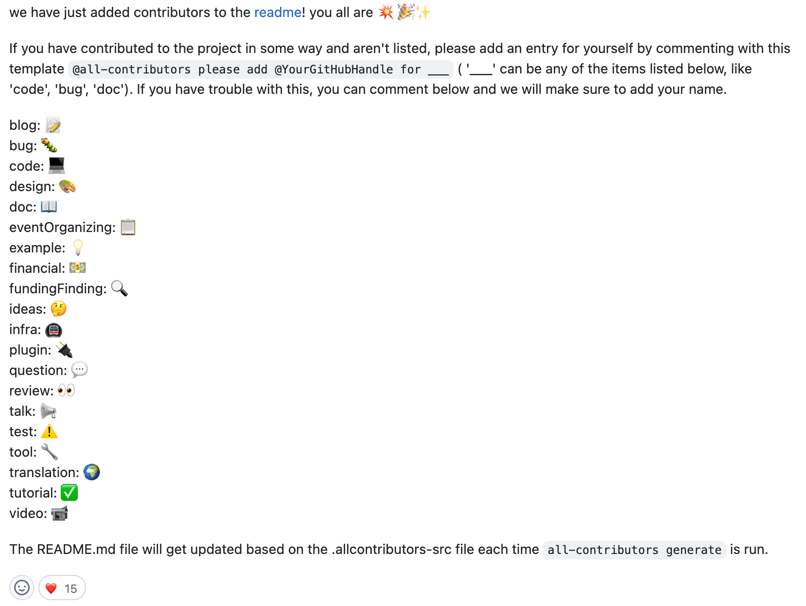

Getting Involved with Open Source
Where Do I Start?
This list consolidates open source projects that are beginner-friendly and are a great place to create your first pull request. If you'd prefer to not contribute through programming, this list contains a list of non-code specific projects.
If you feel more comfortable with working within an open source project and would like to work more extensively with in-depth mentorship, refer to this list of Open Source internship programs.
As mentioned earlier, there are myriads of ways to be involved with an open source project that doesn't involve programming. Although these lists do not reflect all the vast, different types of projects and contributions out there, they're a great place to get started with your contribution journey.
The Processing Foundation also offers fellowships and various opportunities to support open source projects and encourage community members to create and explore!
Other Forms of Contribution

Getting Paid for Open Source Work
A lot of open source work is voluntary. Some people might not interested in getting paid for their open source work because they might already have a full-time job they enjoy, love open source as a hobby, or gain different benefits from contributing (such as a skill or a community).
For others, especially if contributions are ongoing or require significant time, getting paid to contribute is the only way they can participate, either because the project requires it or for personal reasons. Paid work also enables people from different walks of life to make meaningful contributions.
Some people cannot afford to spend unpaid time on open source projects based on their current financial position or personal obligations, which means that the world never sees contributions from talented people who can't afford to volunteer their time. This has ethical implications, as described by Ashe Dryden in "The Ethics of Unpaid Labor and the OSS Community. The work that is done is biased in favor of those who already have the privileges, who then may gain additional advantages based on their volunteer contributions, which reinforces the current lack of diversity on the open source community. While a majority of the opportunities in the internship program list above are paid, we acknowledge that contributing to open source projects in general is labor that not everyone can afford to provide.